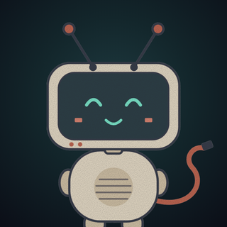

Canal de YouTube
Eco de Bergmál
Historias de ficción con tono conspiranoico y toques de ciencia ficción, narradas por Eco: un eco antiguo que vive en un receptor olvidado y capta transmisiones que nadie debería oír.
Todas las historias son ficción. Personajes, lugares y hechos son inventados. Las voces, imágenes y animaciones se producen con herramientas de inteligencia artificial, y cada video lo indica.
Fiction stories in Spanish and English
Fiction stories with a conspiratorial, sci-fi tone, narrated by Eco, an ancient echo living inside a forgotten receiver. Every story is fiction. Voices, images and animation are made with AI tools, and every video discloses it.